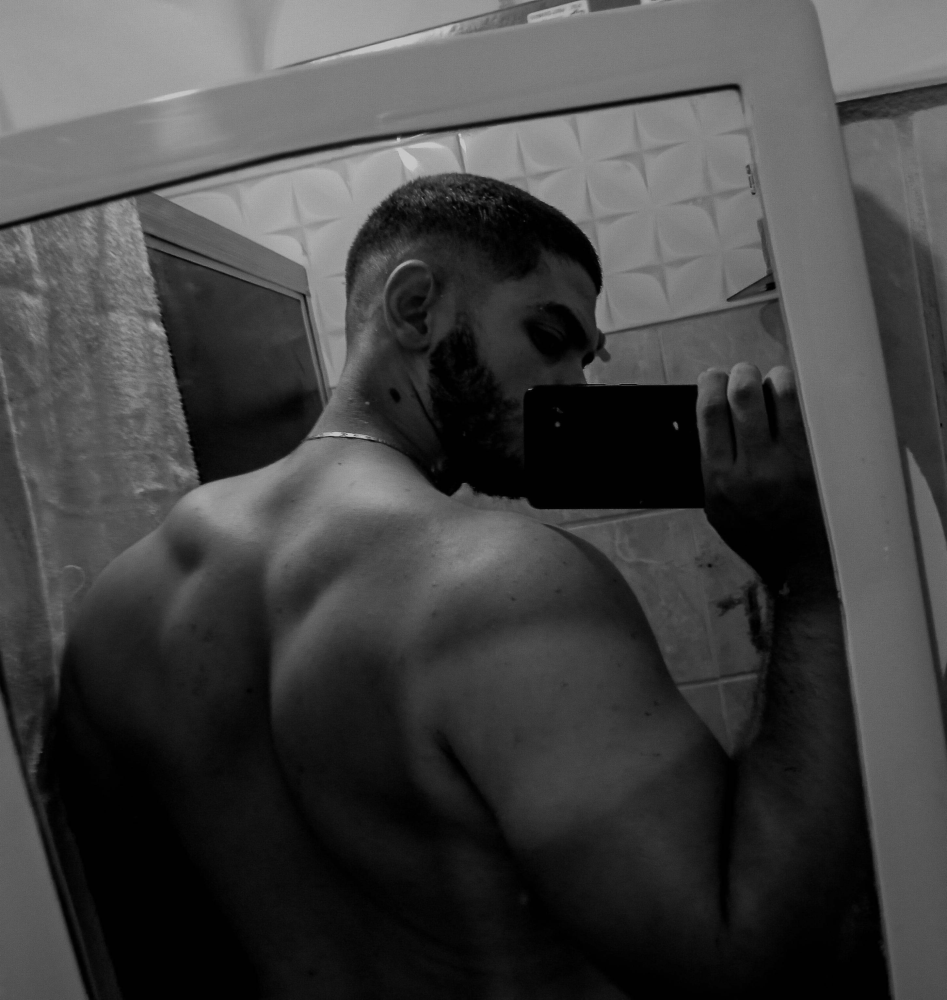

Fala Lucas, cara, eu não sou tão bom com palavras, então fiz o
que eu sei fazer kkkkk espero que tenha gostado.
Bom, espero que tu tenha aproveitado bastante esse encontro, sei
que tu não é muito desses tipos de movimento, mas espero de
coração que além de ter se divertido, Jesus realmente tenha te
encontrado aí.
Cara, só quero que tu saibas que eu super fiquei honrado pela
confiança que tu depositou em mim, de me chamar pra ser teu
padrinho, e espero que esteja cumprindo esse papel kkk, estou
super feliz em ser teu padrinho man.
Não só por todas nossas aventuras e conversas, mas pela montanha
de ideologias que temos em comum, bem como nossos gostos bem
específicos (atirar, dirigir e etc) kkkkkkk.
Bom, acho que é isso man, saiba que pode contar sempre comigo
pra o que precisar, te desejo tudo de bom, e oro sempre pra que
tu alcance teus objetivos, que sei que tu vai alcançar, pois
vejo que tu é um cara de muita garra, determinação e gigante
kkkkk.
Eu ia por uma música mais bonitinha, mas sei que tu é fã dessa
kkkkkkkkkkk tomara que eu não tenha errado na escolha
kkkkkkkkkkkkkkkkkk 😜😹😹
Do seu padrinho, Marcelo!